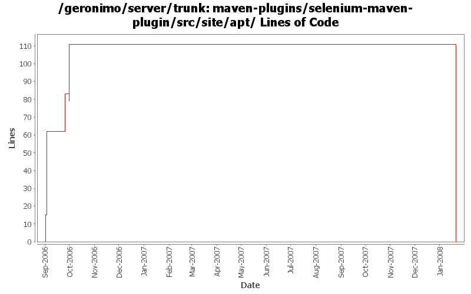

[root]/maven-plugins/selenium-maven-plugin/src/site/apt

| Author | Changes | Lines of Code | Lines per Change |
|---|---|---|---|
| jdillon | 11 (100.0%) | 190 (100.0%) | 17.2 |
(GERONIMO-3771) Moved maven-plugins/* to buildsupport/*, updated groupId to org.apache.geronimo.buildsupport
0 lines of code changed in 1 file:
Update usage docs to include how to enable logging and debug output
34 lines of code changed in 1 file:
Minor updates to the usage docs
3 lines of code changed in 1 file:
Update to use new header
Fixed some minor formatting
Fixed some usage of $Id$
Fixed selenium-maven-plugin usage about outputs since last refactoring
0 lines of code changed in 1 file:
Adding APT friendly ASL sub-header, testing props for keyword expansion
83 lines of code changed in 1 file:
Added background flag to allow start to block or not block
Default is block, so that mvn selenium:start can be used for development
22 lines of code changed in 1 file:
Fixed ${}
1 lines of code changed in 1 file:
Update site docs
10 lines of code changed in 1 file:
Update site docs
1 lines of code changed in 1 file:
Update the usage
21 lines of code changed in 1 file:
Plugin to start the Selenium server
15 lines of code changed in 1 file: